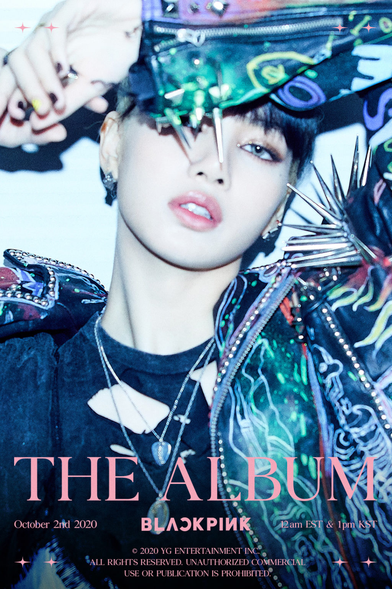

대한민국의 걸 그룹 블랙핑크의 멤버이다. 본명은 라리사 마노반, 개명 전 이름은 쁘란 쁘리야 마노반이다.
태국 부리람주 출신으로 프라파몬트리 학교에서 중등 교육을 마쳤다. 어린 시절부터 리사는 한국의 케이팝에 관심을 보였는데 특히 빅뱅과 2NE1에 관심이 많았다. 4살 때 처음으로 댄스 강좌를 수강한 그녀는 어린 시절 내내 많은 댄스 경연 대회에 참가했다. 2009년 9월 채널 9에서 LG 엔터테인먼트 밀리언 드림 사난 월드 방송에 참가하여 "스페셜 팀"상을 수상했다. 그녀는 또한 2009년 초에 모랄 프로모션 센터가 주최 한 "Top 3 Good Morals of Thailand"대회에 학교 대표로 노래 경연 대회에 참여해서 2 위를 차지하기도 했다. 2010년 리사는 태국에서 YG 엔터테인먼트가 주최한 오디션을 보았는데, 4,000명의 지원자 중 유일하게 합격했다.그리고 그녀는 2011년 4월 11일에 YG 엔터테인먼트 역사상 첫 외국인 출신 연습생이 되었다.
